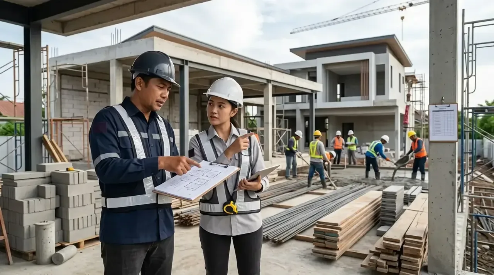

Pengertian Kontraktor Bangunan Secara Umum dan Hukum
Membangun rumah tinggal, ruko, gedung kantor, maupun merenovasi bangunan lama adalah salah satu keputusan finansial terbesar dalam hidup seseorang. Namun, tanpa perencanaan yang matang dan pengawasan teknis yang profesional, proses pembangunan berisiko menghadapi pembengkakan biaya (overbudget), keterlambatan waktu pengerjaan, hingga masalah kegagalan struktur fisik.
Secara definisi hukum dan praktis, kontraktor bangunan adalah badan usaha hukum (PT atau CV) atau perorangan ahli yang ditunjuk secara resmi oleh pemilik proyek (client) untuk melaksanakan pekerjaan pembangunan fisik sesuai dengan kesepakatan Surat Perjanjian Kerja (SPK) yang sah secara hukum.
Dalam kesepakatan tertulis tersebut, seluruh aspek pengerjaan telah diatur secara transparan, mulai dari spesifikasi material, nilai total Anggaran Biaya (RAB), jadwal penyelesaian (time schedule), skema termin pembayaran, hingga masa pemeliharaan pasca pengerjaan.
- Pastikan kontraktor memiliki Surat Perjanjian Kerja (SPK) bernomor dan ber-materai sah.
- Minta rincian spesifikasi merek material yang akan digunakan pada lampiran RAB.
- Pastikan adanya pasal masa garansi pemeliharaan tertulis minimal 3 hingga 12 bulan.
Tugas dan Tanggung Jawab Utama Kontraktor Bangunan
Tugas seorang kontraktor tidak sekadar mendatangkan tenaga kerja di lokasi pengerjaan, melainkan bertindak sebagai manajer eksekutif proyek yang mengawasi seluruh tahapan fisik dan administrasi dari awal hingga selesai:
- Penyusunan Rencana Anggaran Biaya (RAB): Mengolah desain arsitektur menjadi daftar rincian biaya transparan mencakup volume bahan, upah tenaga kerja, dan alokasi waktu.
- Manajemen Rantai Pasok Material: Menyediakan bahan bangunan berstandar SNI berkualitas sesuai spesifikasi kesepakatan tanpa mengganti material secara sepihak.
- Manajemen Tenaga Kerja & Mandor: Mengarahkan mandor dan tukang ahli di lapangan agar bekerja presisi sesuai gambar teknis (DED).
- Pengawasan Mutu (Quality Control): Melakukan inspeksi berkala pada tahap pondasi, pengecoran struktur beton, instalasi listrik/plumbing, hingga tahap finishing.
- Pencegahan Risiko K3: Memastikan prosedur keselamatan dan kesehatan kerja (K3) diterapkan dengan baik di lokasi proyek.
- Pengawasan teknis yang presisi dari kontraktor profesional mampu menekan risiko kebocoran atap dan retak rambut dinding hingga 90%.
- Manajemen bahan terstruktur mengurangi potensi limbah sisa material yang terbuang sia-sia.

Koordinasi teknis dan konsultasi langsung di lapangan antara tim manajemen kontraktor dan pemilik proyek.
Perbedaan Utama Antara Kontraktor Resmi dan Pemborong Tradisional
Meskipun keduanya sama-sama bergerak di bidang jasa konstruksi, terdapat perbedaan mendasar antara kontraktor bangunan resmi dan pemborong tradisional:
| Aspek Pembanding | Kontraktor Bangunan Resmi | Pemborong Tradisional |
|---|---|---|
| Legalitas Hukum | Berbadan hukum resmi (PT/CV) dengan NIB & SBU. | Perorangan tanpa izin legalitas resmi. |
| Perjanjian Kerja | Surat Perjanjian Kerja (SPK) resmi mengikat secara hukum. | Kesepakatan lisan atau catatan sederhana. |
| Rincian RAB | Sangat detail (volume, harga satuan, merek material). | Sistem borongan global tanpa detail bahan. |
| Garansi Pemeliharaan | Garansi pemeliharaan tertulis resmi (3 - 12 bulan). | Jarang memberikan garansi tertulis resmi. |
Tahapan Alur Kerja Pembangunan oleh Kontraktor
Dalam mengeksekusi proyek bangunan, kontraktor profesional menjalankan alur kerja sistematis sebagai berikut:
- Konsultasi & Survey Lapangan: Mendiskusikan kebutuhan ruang, anggaran, serta mengukur lahan lokasi.
- Penyusunan Desain & RAB: Membuat konsep 2D/3D arsitektur dan rincian RAB tertulis.
- Penandatanganan SPK: Menyepakati jadwal pelaksanaan, termin pembayaran, dan garansi.
- Pekerjaan Struktur Fisik: Pengerjaan pondasi cakar ayam, sloof, kolom beton, dan rangka atap.
- Finishing & Quality Control: Pemasangan keramik, cat dinding, plumbing, serta instalasi listrik.
- Serah Terima Proyek: Penyerahan kunci bangunan disertai berita acara serah terima resmi.
Kesalahan Umum Sebelum Memilih Jasa Kontraktor
Beberapa kesalahan yang sering terjadi saat calon pemilik rumah memilih penyedia kontraktor antara lain:
- ❌ Tergiur penawaran harga sangat murah tanpa mengecek kredibilitas portofolio fisik.
- ❌ Memulai pekerjaan tanpa ada dokumen Surat Perjanjian Kerja (SPK) yang jelas.
- ❌ Mengabaikan klausal garansi pemeliharaan pasca serah terima kunci.
- ❌ Tidak memeriksa ketepatan rincian spesifikasi material dalam dokumen RAB.
Pertanyaan Populer Seputar Jasa Kontraktor Bangunan
Kesimpulan Praktis
Bekerja sama dengan kontraktor bangunan profesional adalah keputusan terbaik untuk memastikan kualitas struktur, kepastian anggaran biaya, dan ketepatan jadwal pembangunan proyek Anda. Dapatkan pendampingan dari tim ahli terbaik kami untuk mewujudkan hunian impian Anda.